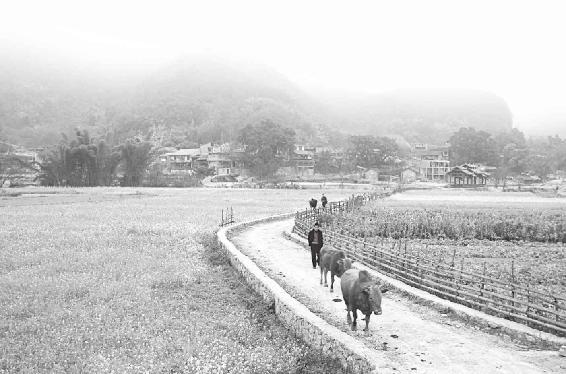
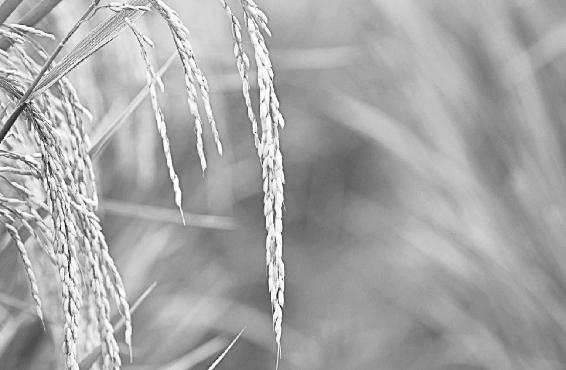
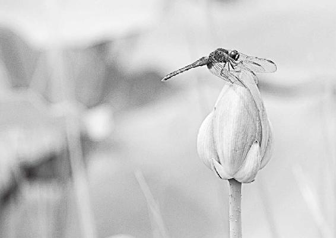
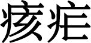

夏天是一个火热的季节。这时候，心气随着天地的变化也变得很足、很旺。这时，要疯狂生长，去孕育自己的果实。
现在人们的“果实”发育不良了。男人的精子数目减少了，女子的卵泡不成熟，这都跟夏天用空调、冰箱以及喝冷饮有关。
不要让自己活得太压抑。冬天你藏着、掖着没问题，但在夏天，你还这么着，那身体肯定出问题。
经文：
夏三月，此谓蕃秀，天地气交，万物华实；夜卧早起，无厌于日，使志无怒，使华英成秀，使气得泄，若所爱在外，此夏气之应，养长之道也；逆之则伤心，秋为痎疟，奉收者少，冬至重病。
万物都要在这会儿孕育“孩子”
梁冬：春三月过后，我们来说说“夏三月，此谓蕃秀”。
徐文兵：“夏三月”是指立夏到立秋前这三个月。一般来说，五月的四号、五号就立夏了。接着，小满、芒种、夏至，然后小暑、大暑，共六个节气，一气是十五天。有两个节，一个是立夏，一个是夏至。一年中有四个立，就是四个节。还有两个至：夏至、冬至，还有两个分：春分、秋分，一共是八节。所以，一年下来有四季八节、二十四气、七十二候。这些，我在前面已经讲过了。那夏季这三个月，我们又该怎么度过呢？
夏三月有六气：立夏、小满、芒种、夏至、小暑、大暑。
夏三月，我们生长的环境变成什么样了？“此谓蕃秀”，什么叫“蕃”呢？
梁冬：这个我看了很多的解释，这个“蕃秀”，好像是一笔带过，什么是蕃？这个广东人称外国人叫番鬼，番茄吗？
徐文兵：什么番茄？这个“蕃”是草字头，低下一个番。广州还有个番禺对吧，你看这个番禺的番，加一个羽毛的羽念什么？
梁冬：就是翻嘛！
徐文兵：这个“翻”描写的是一个加倍，层层叠叠的样子。春天是刚开花，到了夏天则是枝叶茂密，在老树上出现了新的枝。
“蕃”就是“此谓发陈”后，层层叠叠的新枝叶从老树上长出的茂盛样子。
“蕃”通“藩”，有个词叫“藩篱”，一堵篱笆墙，把你家跟我家隔开了，这叫“篱”。武松要出门了，走之前把自己家的篱笆扎紧了，并告诫潘金莲：“篱牢犬不入”。“藩篱”是什么意思？如果你家是两层，甚至是三层，中间会有一道隔离墙，这就叫“藩篱”，说明相互隔绝的程度更厉害了。
徐文兵：夏三月，看到树木，首先想到的是“蕃”，其次才是“秀”。我们评价别人时喜欢说“你长得很秀气”，赞美祖国叫“山川秀美”，可仔细想一下，“秀”到底啥意思？不知道，就知道是漂亮。怎么个漂亮法？就说不出来了。提醒大家一句，平时我们轻易不要夸人家小姑娘长得秀气。“秀”什么意思？它是个象形文字。怀孕的“孕”字怎么写？上面一个“乃”，下面一个“子”字。“秀”是下面一个“乃”，上面一个“禾”字。这意味着谁怀孕了？植物！
为什么平时轻易不要夸人家小姑娘长得秀气。
“秀”是下面一个“乃”，上面一个“禾”字。这意味着谁怀孕了？植物！
为什么春有华，秋有实？为什么有的花朵华而不实？因为它在夏天没“秀”。所以，“秀”是植物在开花、受精后，开始孕育果实的那个状态，春天开完花了，到夏天，树上结满了青色果实的状态叫“秀”。而具体到人，女人怀孕后挺着个大肚子叫“孕”。这就叫“夏三月，此谓蕃秀”。
为什么春有华，秋有实？为什么有的花朵华而不实？因为它在夏天没“秀”。
梁冬：有时候你看见某一个人名字里面有秀，你就没法念他的名字了，所以学问太多实在是很难受的。
徐文兵：“秀才”啥意思？怀着才的人，满腹经纶，学富五车，不是一肚子草包的叫“秀才”。
梁冬：肚子里有东西才叫“此谓蕃秀”。
为什么我叫“天地的孩子”
徐文兵：在春天，“人法地”，然后“地法天”“天地俱生”。
为什么春天我们要放风筝，因为地气在太阳的引逗下开始往上走。当地上的水蒸气（地气）被蒸上天，形成云，下降为雨，这时候就出现了一种天地交流的现象。
夏天，看天地像一对情侣一样，热烈地拥抱。
为什么“春雨贵如油”？因为“天地俱生”时，地气都往上走，升到天上凝不成雨，只凝成了云，所以要下点雨很难。到夏天，地气上升为云，天气下降为雨，一升一降，这种交流就开始了，天地就像一对情侣一样热烈地拥抱。
梁冬：所以我们叫“天地的孩子”。
徐文兵：因为我们是天造地化后的产物，天地干什么，我们就跟着干什么。
为什么我们叫“天地的孩子”？
看相拥而舞的花儿与果儿
梁冬：接下来我们来说说“万物华实”。
徐文兵：万物包括植物，也包括动物。就像《黄帝内经太素》里说的，一到夏天，开花的植物有，开始结果的植物也有。像早春开得很早的杏花，到夏天里就没了，但结了果。夏至前后，杏就黄了，我们就能吃到杏了。这个时候比春天光开花那会儿更殷实，所以叫“万物华实”。

小满 约在5月20日到22日之间，北方指夏熟作物的籽粒开始灌浆饱满，但还未成熟；南方地区把“满”用来形容雨水的盈缺，说小满时田里如果蓄不满水，就可能造成田坎干裂。小满未满时，最忌骄躁之心。
夏天睡觉要晚睡早起
徐文兵：“夜卧早起”就是说在夏天，我们要根据天地变化的情况来调整作息时间，可以晚点睡，早点起。
梁冬：你讲的是“可以”，而不是“应该”，这两种说法不一样哦。
徐文兵：我只能说“可以”，为什么？因为现在有了灯光，有了电脑和电视，其实都是在人为地延长光照的时间。古代人顶多点根蜡烛，点盏油灯，那种光污染是可以忽略不计的。而我们现在天天点着灯，这就相当于天天都在延长日照时间，所以，我说的是可以选择晚睡早起。到这会儿，因为昼长夜短，我们可以顺应天地的变化，睡得少一点。
梁冬：所谓的“早起”要早到什么时候？
徐文兵：在夏天，差不多五六点钟，天就亮了，所以你可以这时起来。如果你到冬天还五六点钟出去锻炼，那叫蠢。大家可以参照一下天安门广场升旗和降旗的时间，它正好跟太阳的升起、降落是同步的。在春分或是秋分那一天，它一般都在六点，或是六点一刻升旗。到了夏天，这个时间绝对会提早，一般都在五点半左右。
夏天人不要讨厌太阳
梁冬：什么是“无厌于日”？
徐文兵：“无厌于日”可以说是对我们现实生活最有说服力的一句话。
夏天要晚睡早起，因为这会儿昼长夜短。
什么叫“厌”？它最早的意思是指吃多了，撑着了，开始腻味儿了，闻到油烟味儿、肉味儿就想吐。小孩儿为什么常会患“厌食症”？现在的小孩子，爹妈追着哄着，求小祖宗、小爷爷似的让他吃一口饭，但他就不吃。为什么？因为他吃多了，撑着了，开始厌食了。所以，“厌”就是我们经常说的“不喜欢”的意思。而“无厌于日”，就是说在夏天这么激烈、奔放的时候，我们不要讨厌太阳。
“厌”最早的意思是指吃多了，撑着了，开始腻味了，后来就是“不喜欢”的意思。
现在我们讨厌太阳的方法有很多，第一是把自己关在写字楼里。关在写字楼里还不算，还要开着空调。出去吧，还要抹着各种防晒霜，打着什么遮阳伞，就是讨厌那个太阳。
植物想孕好果子，那必须得在夏天受热才行，否则成熟不了。
其实，夏天本来就应该热。植物想华而实，想孕好果子，那必须要在夏天受热才行，否则成熟不了。
人的生理发育跟自然是同步的，如果光有秋收、冬藏、春生，没有夏天的热烈，很多人的生理功能就会受到影响。我印象最深的是2000年去香港，大概是八九月份去的。我也去过日本。日本呢，它讲究穿西服打领带，很正规地上班。所以它在夏天那个时候，冷气开得那叫一个足，我就受不了。在这样的环境里待久了，很多人就出现了各种各样的身心疾病。
人的生理发育跟自然是同步的。
梁冬：我以前在香港工作过，在冬天的时候，很多女青年是穿毛衣的，但她们那个时候又不穿毛裤，由于着凉时间长了，她们的腿就变得很粗，因为要分泌脂肪来抵抗冷气。
徐文兵：没错。
梁冬：所以现在真是一个可怕的冷气新社会。
为什么有人一到秋冬就会抑郁？因为他在夏天光照的时间不长。
徐文兵：大家都知道，我们的身体对各种营养物质，比如说对钙，对维生素D的吸收，是有条件的，那就是要有光照。为什么有人一到秋冬就会患抑郁症？就是因为他光照的时间不长。我们经常说，身体的阳气是生命的动力，那自然界的阳气从哪里来？不就是从太阳那儿。可是我们到了夏天，就因为热，想尽办法去躲太阳。
人的身体是冬暖夏凉的，在冬天，你摸上去热乎乎的；到夏天你再去摸，跟摸到蛇一样，是凉的。因为我们人体有一套自我平衡的系统，比如你感觉冷了，身体会通过“打摆子”来振奋体内的阳气，让自己热乎起来。
人的身体是冬暖夏凉的，因为它有一套自我平衡的系统，非常神奇。
徐文兵：中医五行里面讲到了，我们人体有两套系统：一套制热，一套制冷。制热系统对应的是肝和心，而制冷系统对应的是肺和肾。所以到夏天，你感觉特别热的时候，肾水就会开始“工作”，然后你身上会出点毛毛汗，不是那种大汗，接着没过多久，你的心情也不那么焦躁了。
人体有两套系统：一套制热，一套制冷。制热系统对应的是肝和心。而制冷系统对应的是肺和肾。
《水浒传》里说：“赤日炎炎似火烧，野田禾稻半枯焦。农夫心内如汤煮，公子王孙把扇摇。”他心里有事的话，又赶上赤日炎炎，那他真是全身都焦躁。可是呢，公子王孙们不关心这事儿，尽管赤日炎炎，但他只管把扇摇，一点也不觉得热，所以老百姓流传一句话叫“心静自然凉”。
现在这个社会心又不静，很多人是发自内心地燥热，即使外面天气不热，他身上也燥热。再加上外面天气热，那他怎么做呢？不去从根本上“鼓励”自己的肾水来平抑心火，反而通过喝冰水、吹空调来降火。
我们现在还有一项伟大的发明——电冰箱。手一伸进去，寒气进来了，加上喝进去的冷东西，两冷一夹击，受寒了。在夏天，身体其实是最痛苦的，好多人的病都是受寒后“做”下的。
梁冬：因为在夏天，我们的毛孔是张开的。
在夏天，身体其实是最痛苦的，好多人的病都是受寒后“做”下的。
徐文兵：我以前讲过，经常骑摩托车的人容易得关节炎，但他不是在冬天得的，因为在冬天，他知道穿皮裤，用护膝裹住膝盖来抵挡冷风。冬天，我们的身体是收缩、闭敛的。但一到夏天，毛孔就开放了，屋里又吹着空调，整个就是在拥抱阴暗，远离太阳。这样，寒邪最容易侵袭进身体。
梁冬：以前你说过，很多老妈妈们正在热火朝天做饭的时候，突然忘了根黄瓜，或是忘了拿甜面酱。打开冰箱，手一伸进去，得，寒气一下就窜到身体里了。结果肩膀疼、关节疼，有时候疼得一晚上睡不着觉，到医院检查也查不出啥毛病。
一个小习惯会产生大问题。
很多人从来都没有意识到，一个小习惯会产生什么大问题。比如夏天很热，你开车的时候喜欢把车窗摇开吹风，结果一下子就感冒了。实际上，这些不良生活小习惯造成的结果可能要比我们想象的严重得多。
徐文兵：我发现不少人得病的原因是丧失了“知觉”。“知”是什么？理性的考虑，知道夏天应该“无厌于日”，应该热乎点，离凉远点，这叫“有知”。无“知”的话，我还有“觉”啊。虚邪贼风一来，我有感觉，马上就躲开它。但现在的人，第一无“知”，第二无“觉”。为什么无“觉”呢？因为大多数人都喜欢喝那些冰镇饮料、碳酸饮料，结果把自己的感官给麻痹掉了，最后在不“知”不“觉”中被病邪侵害了。
不少人得病的原因是丧失了“知觉”。
夏天绝不是憋怒的季节
徐文兵：“使志无怒”中的“志”，它代表了记忆和志向。在甲骨文里，“志”上面是一个“之”字，心知道往哪里去，这就是你的志向和愿望。另外，“怒”是什么意思？
怒气形成后没爆发出来的状态叫“怒”，爆发出来叫“愤”。“怒”比“愤”伤人的程度深。“怒”就是把自己的心压抑成了奴隶。
梁冬：上面一个“奴”字，下边一个“心”字。
徐文兵：“怒”就是把自己的心压抑成了奴隶。奴隶是什么？匍匐、跪拜在地下不能站起来的人。我们讲圣人的养生之道是“无恚（huì）嗔之心”。恚嗔之心是怒气的开始，怒气形成了以后，没爆发出来的状态叫“怒”。
梁冬：那爆发出来叫什么？
徐文兵：叫“愤”。你看喷涌的“喷”，口之边一个“贲”字。愤怒的“愤”字是心之边一个“贲”字。所以，把怒气发出来叫“愤”。我们平时都说“发愤图强”，没人说“发怒成强”。“怒”是在肝气动了以后，被压抑的那个状态。发出来了，就叫“愤”。
梁冬：那“怒”比“愤”对自己的伤害要大些吧？
徐文兵：没错，我们经常说“怒伤肝”，愤伤别人，怒是要伤自己的。我记得小时候看过一部关于林则徐的电影。
愤伤别人，怒是要伤自己的。
梁冬：《虎门销烟》。
徐文兵：里面有这样一个镜头：林则徐一看政府拨的银两，本来是要用来造大炮的，结果被一些贪官给贪污挪用了。所以他送走那些贪官后，就把茶杯“哗”一声砸地上了。然后，他突然抬头看到墙上的条幅上写着两个字——制怒，就赶紧去收拾摔碎的茶杯。
“制怒”是儒家或古代士大夫修身的方法，意思是要压制自己的怒气，别让它流露出来。但道家就不主张这么做，它建议我们：第一，要看得开，以不生恚嗔之心，不生气、不怒为最高境界。
你怒就是因为你想不开，你的想法就是：啊，我是以我的君子这种忠诚的标准来衡量所有的人。一旦有人做了贪官污吏的事，那你就想他怎么能这么做呢？如果大家都是这样的人，都有欲望，就都有可能犯错误，那咱们的人性是恶，还是善？要是人性本恶，那我就认为他做贪官很正常，那我就制定一些制度什么的来惩戒、处理他就完了。这理性考量就完了，干吗要生气呢？所以，以不怒为最高点。
生气了，你要不把它转化出去，时间一长，它会变成有形的肿块，这叫“无中生有”。
第二，如果已经怒了怎么办？要找合适的地点、场合，把它发出去，绝对不要去制怒，把心中的那股气压在那儿。人身上的能量是守恒的，生气了，你要不把它转化出去，那口气就永远在那儿。刚开始是无形的一口气，慢慢地它会再结合身体里的其他“恐怖分子”，比如说痰、瘀血等，就变成有形的了，时间一长，就会长出一块东西来。
梁冬：这叫“无中生有”。
徐文兵：“无”不是“没有”，而是你看不见，是一种能量。
“无”不是“没有”，而是你看不见，是一种能量。
梁冬：假使有一天，你真的要摔茶杯的话，给你个建议：先装在塑料袋里面，扎上口再摔，这样收拾起茶杯来比较容易。
徐文兵：怎么把自己已经有的那个怒转化出去？我们刚才说，要找合适的地点、场合。你说齐达内，他就不压抑自己的怒，一头把那哥们撞倒。他可能挨个红牌，没得世界杯奖，但他那个情绪没有受压制，所以他很舒心。我们普通人不敢付出这么大代价，你跟老板生气了，然后就摔茶杯，马上没工作了。情绪倒是发了，但随之的问题开始来了。我建议大家去找中医看看，或者学些中医的方法，把压抑的怒气给舒散开。中医经常说一句话叫“疏肝解郁”。很多被压抑的怒气，就好像来了一阵风，我们说“木曰曲直”，风刮过来，树就弯倒了。但是弯倒以后，它就留下一种痕迹，就相当于我们生气以后郁了一口气。很多人想不开的时候，一般会说：“我就咽不下这口气，我就憋了一口气。”
很多人生气以后的习惯就是吃东西，我建议大家这时千万别吃。我们知道肝气是往上走的，所以有个成语叫“怒发冲冠”。吃东西是往下咽的，足阳明胃经也是从脸往脚上走的，所以一个往上顶，一个往下压。而气本来是无形的能量，但是加上你吃进去的东西后，就变成有形的了，所以生气的时候去吃东西，会形成很难化解的郁气。
为什么生气以后千万别吃东西？
梁冬：有句话叫“吃饭不生气，生气不吃饭”。
徐文兵：怎么去化解自己的怒气呢？我们可以吃一些疏肝理气的药，一般这些药物都有一些辛味儿，是发散的。最好是去找医生调理一下，也可以去药店开一些成药或者是汤药，比如舒肝丸。
梁冬：除了药以外，家里面有没有唾手可得的东西呢？
徐文兵：唾手可得的话，你要辨证。逍遥丸勉强可以用，良附丸也还行。比如有些人生完气，吃点东西就开始胃疼，这时吃点良附丸可以，香砂养胃丸也勉强可以吃。另外，吃完药或是扎完针以后，有一个明显的特点，就是会开始打嗝、放屁。屁、嗝是什么？
梁冬：气。
徐文兵：就是你咽下的那口气，你把它放出来了，它就变成了一种无形的东西，肝里面郁结的气也随着消散了，“敌人”没有根据地了，你就免了那种“患”。“患”就是心中堵了一串。
夏天绝不是郁闷、憋怒、憋屈的季节，如果心中有患，你要去找合适的场合、时间把它尽情地发泄出去。
不要让自己活得太压抑。冬天你藏着、掖着没问题，但在夏天，你还这么着，那身体肯定出问题。
梁冬：这就是“使志无怒”。
徐文兵：不要让自己活得太压抑。冬天是“若伏若匿若有私意”，你藏着、掖着没问题。但在夏天，你还这么压抑着，那就不太好活了。
开花后一定要“怀孕”
梁冬：什么是“使华英成秀”？
徐文兵：这就是我刚才说的那句话。
梁冬：此为蕃秀嘛。
徐文兵：花ing，英是什么啊？
徐文兵：我们经常说英雄，你说英是什么？
梁冬：英是一个“央”，上面一个“艹”，其实我以前看过一个版本，说“英”是那种绳子勒在脖子上的那种感觉，
徐文兵：叫英？
梁冬：叫央，央！
徐文兵：这就扯到央了。我们经常说中央，咱们就说中央电视台，它翻译成英语就是——China Central Television：CCTV。“central”是什么意思？
梁冬：中心。
徐文兵：central解释的是“中”，它没翻译“央”。“中”和“央”是不一样的。你看“央”的字形，像不像埃菲尔铁塔？
“央”是最高点，我们说夜未央、未央宫，“央”是什么呀？最冷，最夜。
“央”是最高点，我们说夜未央、未央宫，“央”是什么呀？最冷，最夜。
子时的最高点叫“央”，夜未央。你看，“英”是草字头底下一个“央”，所以英是花开了以后中央吐出的最高点，那是花蕊。花蕊是花吐出来的最高点。古代的英雄戴的帽子上都插了两根雉鸡翎，印第安人的大英雄戴的帽子上也插着羽毛，就是表现自己中心很高。

芒种 一般在6月6日前后，农作物开始成熟，忙碌的日子来临了，应保持轻松愉快的心情，注重精神调养。
梁冬：这就是个人英雄崇拜，“华英成秀”。
徐文兵：在夏天，我们要利用这种热烈的天气，不要厌于日，让我们开出的那些花、吐出的蕊受精，使它怀孕、结果，这叫“使华英成秀”。其实，农民伯伯最怕的是夏天不热。在夏天，要是连着几个阴雨天，完了，种下的麦子该灌浆的灌不了浆，该抽穗的抽不了穗，就成不了实，结不了果。
读懂《黄帝内经》的文字以后，会发现它非常有生活气息。
梁冬：其实读懂《黄帝内经》的文字以后，会发现它还是非常情色的，唉，不是色情。
徐文兵：非常具有生活气息。
夏天，请不要冰镇自己
徐文兵：“泄”和“泻”之间有什么区别？“使气得泄”的“泄”是无形能量的流失；而能看得见的水泻、大便溏泻的“泻”用的是三点水加一个“写”字的“泻”。它们分别指的是无形和有形的能量流失。
“泄”是无形能量的流失；而看得见的水泻、大便溏泻的“泻”指的是有形能量的流失。
你看，冬天是闭藏的，不要泄气。在夏天，毛孔是开放的，你能看见的是出汗，看不见的是体内的热气正往外蒸腾。小时候，我记得跑完步，或者是课间十分钟疯玩一阵后，脑袋顶上都腾腾地冒气。
梁冬：这叫“男人气”。
徐文兵：那会真是童男子，阳气很旺盛，很容易就跑出了一身汗。所以，夏天毛孔开放，就是要让体内积攒的、不管是气还是什么污浊的东西排泄出去。不过，前提是你要“无厌于日”。如果你整天开着空调，开着电扇，结果气没来得及出去，虚邪贼风就先窜进你身体里了，所以夏天是非常容易中风的一个季节，因为你身体里的气是往外泄的。
梁冬：因为毛孔是开放的。
徐文兵：你能看得见的叫毛孔、汗毛孔、毛汗孔，我们中医还有一个词叫“腠理”。理能看见，就是皮肤的纹理，有粗有细，但腠是细胞中的一个间隙。你看不见它，但它的确存在，它不是出汗的，是出气的。
人的皮肤是有呼吸功能的，我是怎么体会到的呢？比如夏天下雨了，我们套一件塑料雨衣，裹的非常严实的话，会突然觉得气透不过来。
梁冬：虽然鼻子露在外面，但也没办法。
徐文兵：憋得慌。现在有人发明了保暖内衣，里面就弄一层塑料薄膜，其实那种衣服穿在身上是极其不舒服的。为什么？因为不透气。
扁鹊见蔡桓公的时候说：“君有疾在腠理，不治将恐深。”意思是：你那个小毛病——“疾”是在皮肤的表里，没往里走。所以，夏天你应该让自己处于开放、开泄的状态，但也不要像某些膀爷，一到夏天，光着个膀子横着就出来了。

夏至 6月21日或22日，白昼变长，地表温度逐渐升温，此时不要“冰镇”自己。
梁冬：就像郭德纲说的：“哇，身上纹着两条带鱼。”
徐文兵：要“使气得泄”，这是一种浑身舒畅的感觉。在夏天，很多人喜欢喝冷饮、吃冰棍，把自己“冰镇”起来。想一想，气被这些冷东西冰镇后能从身体里泄出去吗？不会，反而被镇在身体内了。
夏天，很多人喜欢喝冷饮、吃冰棍，把自己“冰镇”起来。想一想，气被这些冷东西冰镇后能从身体里泄出去吗？不会，反而被镇在身体内了。
古代没有电冰箱的时候，在冬天，老百姓就把冰块切下来放到地库里面。到夏天，就从地库里面把冰运到城里面卖。这些人一般走到城里后渴了，就敲开街坊家门，讨碗水或者是茶喝。可能有人会说：“哎，他车上不是有冰吗？渴了就吃冰呗。”他也知道吃冰不解渴，为什么？因为冰把他镇住了。
什么叫“生津止渴”，只有让自己体内产生津液，才能真正消除焦渴的状态。
只有让自己体内产生津液，才能真正消除焦渴的状态。
如果生不了津，你就是吃再多的冰，喝再多的冷饮，也还是会渴。所以人家是讨碗热茶喝，之后唇齿留香，唉，舌下津液一出来，那股焦渴劲就没了。作为回报，然后他就送对方一块冰。
你看我们现代人，一到夏天，拎了个冷饮瓶子，嚼了个冰棍，捧着一个冰淇淋的桶在那吃。哎呀！我一看，说这年头医院的生意绝对会非常好的。为什么！天天有这么多人在往医院那走，排队。
梁冬：我昨天碰见北大的王守强教授，他说：“科技在进步，文化很难说进步，可能某些地方还甚至不如……”
夏天是示爱的最好季节
梁冬： 什么是“若所爱在外”？
徐文兵：我前面说了，春天是发情的季节，是情绪、情感、感情萌动的时候。它发青，还比较青涩。到了夏天，植物颜色从青色变成了红色、赤色。木生火，所以夏天是一个火热的季节。
春天对应的是肝，夏天对应的是心，“心”包括我们说的心包——肉质的心脏，还包括我们形而上的情感、情绪。这时候，心气随着天地的变化也变得很足、很旺。
我们经常说这个人心气很高，老盘算着要做点事。有些人没什么心气，对什么都没兴趣，活得都没劲了。所以夏天正常人心气很足，然后呢，是表达自己的那种爱的一个季节。
夏天不仅是示爱的大好时间，也是做爱的最好季节。
梁冬：夏天是一个示爱的季节。
徐文兵：不仅是示爱的季节，甚至是做那个的季节。“爱”的繁体字“爱”的中间是有“心”的，说明爱是要动心的。现在的简化字已经把汉字闹成“残废”了。
梁冬：没有心了！
心气不足、干什么都没劲的那个状态就是“哀”。
徐文兵：没有心的爱就是哀，“哀莫大于心死”。我们用一个字来形容，心气不足、干什么都没劲的那个状态就是“哀”。
梁冬：“哀”为什么写成那样呢？
春天去约会，夏天去示爱，顺应天地的节奏，祝您好运。
徐文兵：“哀”跟“衰”是一样的，衰到一定程度，那一横都没了，就变成哀了，心有余而力不足。《黄帝内经》里说的“动作不衰”就这意思。
“哀”是整个心都死掉了。悼念死者的时候，我们说是去致哀，什么意思？我们不想让你死，但我们无能为力！很多人一看街上的流浪狗、流浪猫，自个儿就在那流泪，为什么？“兔死狐悲，物伤其类”，他其实是在同情自己，心里在淌血，在流泪。像这种人到夏天可能会好过一点，但到了秋冬，可能会难过、抑郁得要死。健康的人，在夏天是热情奔放的。所以，我说春天去约会，夏天去示爱，顺应天地的节奏，祝您好运。
梁冬：所以有首歌唱得好——“这是一个恋爱的季节”，说的就是夏天。
千万别逆天
梁冬：“此夏气之应”，为什么要用“应”这个字呢？
天气出现了什么像，出现了什么气，我们就应和着走，千万不要逆天。
徐文兵：我们经常说“答应”，什么叫“应”？别人往上顶，你也跟着往上颠；别人往下落，你也跟着往下坠。我们要“四气调神”，跟着自然天气的变化去走，天气出现了什么像，出现了什么气，我们就应和着走，所以保持一致叫“应”。应一声，叫一声，答应一下。没有回声，没有回应，那你就没有跟上天地的共振和节奏。
梁冬：有人给你发短信，即使就是“OK”两字，你也要回一下，否则对方会觉得一拳打在空中。
徐文兵：你会让别人很焦虑。我们经常说“来而不往非礼也”。别人送你一个礼，是表达一种感情。其实，每个人心里都期待着有一个回应，哪怕你说一句话，当然，最好是有形的物质，都是好的。你这么做人，那你跟朋友的关系就会维持很久。我看很多有教养的家庭，其中一个下班回到家就说：“我回来啦。”另一个就答：“你辛苦了。”
别人送你一个礼，是表达一种感情，你一定要有一个回应。
还有，老板叫员工：“谁谁谁，你来一下。”“哎，您找我有什么事？”这种员工都是有眼力见的，懂得这种自然之道；如果老板叫了你半天，你事倒是干了，却没应一声，白干！因为这样会让老板心里不舒服，心里老有种空落落的感觉，这就跟放二踢脚一样，“咚”的响了一声，每个人都期待第二声响，结果就是没响，心里特别扭。
老板与员工的相处之道。

，奉收者少，冬至重病”夏天不好好长，秋天没收的，冬天得重病
梁冬：“此夏气之应，养长之道也。”意思是说，春天要养生，夏天要养长。
现在人们的“果实”发育不良了。男人的精子数目减少了，女子的卵泡不成熟，这都跟夏天用空调、冰箱以及喝冷饮有关。
徐文兵：在春天，植物发芽了，到夏天就要疯狂生长，去孕育自己的果实。我发现，现在人们的“果实”发育不良了。男人的精子数目减少了，女子的卵泡不成熟，这都跟夏天用空调、冰箱以及喝冷饮有关。
梁冬：真的吗？
徐文兵：万物是一理的，万物华实，也包括我们人类。孕育自己的果实需要一个热烈的阶段，否则它就发育不好，出现抑郁症、躁狂症，包括一些心脏疾病，那这根是从哪儿种下的？
梁冬：夏天。
为什么抑郁症、躁狂症，包括一些心脏疾病的根是从夏天种下的？
徐文兵：夏天本来应该热，应该“无厌于日”的，你非要逆着它，伤了自己的心气，就好像春天去杀生，会伤了自己的肝气一样。在夏天，你逆着天地之气走的话，就容易伤心。
说到心，其实我们有两个，一个是有形的，叫“心包”，就是实质的心脏，肉心。另外一个就是我们形而上的思想，包括情绪、情感，那叫心神，这也会被伤到。所以，夏天是一个养心的好季节。
梁冬：“逆之则伤心，秋为痎疟。”
夏天逆着天地之气走，容易伤心，到秋天就收获不了什么。
徐文兵：“痎疟”是一个中医的病名。你如果逆天地之气走的话，到秋天就容易得一种常见病——疟疾，一会儿冷，一会儿热的。其实，这是伏寒在身体里面发散不出来的表现。
这样到了秋天，就没东西可收获了。华英成不了秀，没有孕育，哪来结果？所以，春华为什么没有秋实呢？因为没有夏秀，在夏天，你没有好好地、热烈地让它去秀！
梁冬：所以就“奉收者少，冬至重病”。
大暑 7月23日或24日，一年最炎热的时候，此时要特别注意养心。
梁冬：夏天的饮食应该注意一些什么呢？
徐文兵：在春天，如果是健康人，可以稍微吃一点发散的、辛散的东西。但现在很多人都习惯加班熬夜，点灯熬油，人为地增加了日光的照射时间，所以大家都是发散太过而收敛太少。所以，你在春天还吃辛辣、发散的东西，那就错了，你可以煮点乌梅汤，稍微收敛一下，这是对病人而言！
在夏天，如果你“无厌于日”，那会出很多汗，流失掉很多盐分。怎么办？多喝汤、喝热水，另外，加点盐，这样可以补充自己体内的盐分。在夏天，人体内的阳气和能量是往体表走的，是要出汗的。这时，身体的哪一块儿是凉的呢？
梁冬：反而是肚子。
徐文兵：我老家有句俗话说得好，睡觉的时候，冬天要盖后背，夏天要盖肚子。在夏天，你摸摸你的肚子，是凉的，而且人的胃口也不好。所以，夏天我们叫疰夏或是苦夏，这是身体自然的一个表现。越到这个时候，你就越要吃热性的东西。我们说“冬吃萝卜夏吃姜”。为什么要吃姜？为了温暖肠胃。可是夏天，我们不光吃冷饮，还吃海鲜，很多人闹肚子，上吐下泻的，就是吃多了海鲜闹的。
越到夏天，越要吃热性的东西。
梁冬：在中医里面，海鲜应该属寒凉之物。
徐文兵：水里的东西都是寒性的，所以在夏天，寒性的东西吃多了，人就容易闹肚子。当然，你上吐下泻地拉出去了，还不错。如果没拉出去，就相当于把阴寒的东西吸收进体内了，就为往后出现荨麻疹等一系列（过敏性）疾病埋下了祸根。
水里的东西都是寒性的。
梁冬：如果你实在喜欢吃海鲜的话，一定要加一些热性的配料，比如说紫苏叶、芥末、生姜、黄酒、白酒等去平衡它的寒性，或者是炭烤着吃。
吃海鲜的话，一定要加一些热性的配料，比如说紫苏叶、芥末、生姜、黄酒、白酒等去平衡它的寒性，或者是炭烤着吃。
徐文兵：我们吃海鲜的时候，都是喝热的黄酒，不像现在的人，都流行吃海鲜喝凉啤酒，很多人得痛风就是这原因。这也是人在夏天“做”下的疾病之一。
梁冬：最后总结一下：夏天由于阳气外泄，肚子里反而会比较寒，如果要喝水，也要尽量喝点热水。
徐文兵：我们经常说“养生之道”，什么是养生之道？春天要生，夏天要长，让万事万物拔节儿，使它“华英成秀”，让它热烈地“秀”出来，而不是被“冰镇”住，要是不这样做的话——“逆之，则伤心”，结果是“冬至重病”。病根是你在夏天种下的，但因为这个时候天气还比较热，疾病还没有表现出来。到了冬至那天，阴气最重，阳气最弱，你就可能会发一场重病，事实上很多人都死在冬至那一天。
卫生间是屋子里阴气最重的地方。
比如说我们大家都知道的马季先生，他经过很多磨难、坎坷，本身就有心脏病，很多人还拿他之前的事儿老去诟病他。马先生自己也说心情一直都不是很舒畅，结果他就在冬至那一天的凌晨不幸离世，而且死在卫生间里。
节儿不好过，节过不好，就成了劫难的“劫”。所以，立春、立夏、立秋、立冬、春分、秋分、夏至、冬至这八个节气转换的时候，为了避免发病，要提前吃点药，好好调整一下自己的身体。
梁冬：卫生间是屋子里阴气最重的地方。
徐文兵：阴寒之气、污浊之气最重的时候，马季先生突然心脏病发作了。夏天种下的“种子”到冬至那天发起来了，所以《黄帝内经》说“冬至重病”。
节儿不好过，节过不好，就成了劫难的“劫”。所以，立春、立夏、立秋、立冬、春分、秋分、夏至、冬至这八个节气转换的时候，要提前吃点药，即中医里说的“上工治未病”。